*These authors contributed equally to this work.
1Department of Intelligent Systems, Afeka Tel-Aviv College of Engineering, Israel.
2School of Computer Science, Faculty of Sciences, HIT–Holon Institute of Technology, Israel.
High-performance explosives are dangerous to test and rare to discover. Of roughly 66,000 organic CHNO molecules with reported detonation properties, only about 3,000 carry trustworthy experimental or quantum-chemistry values; generative models trained on the whole mixture either copy the training set or propose candidates whose predicted performance fails on recheck. We present domain-gated latent diffusion (DGLD): a latent diffusion model in which only trusted high-quality labels enter the conditional gradient, while noisy labels train the unconditional prior. Sampling is steered by a multi-task scoring network whose safety and viability heads can be switched independently. Every candidate passes a chemistry filter, semi-empirical screening, and a density-functional-theory (DFT) audit. DGLD yields twelve novel DFT-confirmed leads. The strongest, 3,4,5-trinitro-1,2-isoxazole, reaches calibrated detonation velocity 8.25 km/s, in the HMX-class performance band (HMX ≈ 9.1 km/s), and is structurally distinct from every training molecule. Four no-diffusion baselines fail novelty, performance, or both.
Energetic-materials performance gains translate into reduced propellant mass, smaller warheads and more efficient civilian gas-generators, yet no new HMX-class compound has been disclosed in fifteen years. Here we present domain-gated latent diffusion (DGLD), a tier-gated generative recipe that produces twelve DFT-confirmed novel CHNO leads, including 3,4,5-trinitro-1,2-isoxazole at calibrated detonation velocity 8.25 km/s and structural similarity 0.27 (Tanimoto) to all 65,980 training molecules. Against four no-diffusion baselines run on the same corpus, DGLD is the only method that generates molecules simultaneously novel and on-target under first-principles audit.
The space of synthesisable CHNO molecules with the right balance of crystal density, oxygen balance, heat of formation and detonation kinetics is vast, but every existing computational family has a fundamental limitation. Empirical formulae such as Kamlet–Jacobs1 are accurate within their training regime but miss the high-nitrogen tail. Discriminative property surrogates23 score candidates but do not propose them. Generative language models trained on energetic corpora memorise training molecules. Standard diffusion guidance45 fails silently when the trajectory is as short as molecular generation requires. Compounding these challenges, the labelled corpus is tier-stratified: of \(\sim\)66,000 labelled rows only \(\sim\)3,000 come from experiment or DFT, with the remainder from regime-limited Kamlet–Jacobs values and 3D-CNN surrogates of sharply lower reliability.
DGLD addresses these failures with three coordinated mechanisms operating at training time, sample time, and validation. At training time, a four-tier label-trust hierarchy gates which examples drive the conditional gradient (experimental and DFT labels) and which train only the unconditional prior (Kamlet–Jacobs and surrogate labels), preventing miscalibrated data from corrupting the targeted generation signal. At sample time, a multi-task score model with six property and safety heads injects per-step gradient steering into the diffusion trajectory; each head acts as an independent on/off switch without retraining the backbone. Decoded candidates pass through a four-stage validation funnel: a SMARTS chemistry gate, a Pareto reranker, semi-empirical GFN2-xTB triage, and full DFT audit at B3LYP/6-31G(d) optimisation with \(\omega\)B97X-D3BJ/def2-TZVP single-points calibrated against six anchor compounds.
The contribution is fourfold. (i) A tier-gated training recipe that handles label heterogeneity directly in the conditional gradient rather than via post-hoc filtering. (ii) A multi-task score model with selectable sample-time steering, where per-head scales act as on/off switches over chemistry classes without retraining. (iii) Self-distillation refinement of the viability head against chemist-defined hard negatives. (iv) Twelve DFT-confirmed novel HMX-class candidates, including the chemotype-class headline compound 3,4,5-trinitro-1,2-isoxazole and the chemically distinct co-headline 4-nitro-1,2,3,5-oxatriazole. The tier-gating recipe is domain-agnostic; only the validation funnel changes per application.
We define a productive quadrant as the region where a generated molecule is simultaneously novel against the labelled training corpus (max-Tanimoto \(\le\) 0.55) and competitive with the HMX/CL-20 reference class on predicted detonation performance. Figure 1 places the top-1 candidate from each method against novelty on three property axes (detonation velocity \(D\), density \(\rho\), pressure \(P\)) using the 3D-CNN surrogate scale, so that all five methods are compared on a common axis; the productive-quadrant threshold is set at \(D_\text{surrogate} \ge 9.0\) km/s, with HMX at \(\approx\) 9.1 km/s. Calibrated DFT/Kamlet–Jacobs values for the DGLD leads are reported in the next subsection, where the same compounds calibrate to lower absolute values (HMX calibrated \(D \approx 8\) km/s).
DGLD's production setting (Hz-C2: hazard-axis configuration with three active steering heads, viability + sensitivity + hazard, averaged over three random seeds) lands in the productive quadrant on every axis. The four no-diffusion baselines each fail at least one criterion. SMILES-LSTM21 sits on the Tanimoto-1.0 axis (exact rediscovery). MolMIM 70 M22 is novel but at \(D = 7.70\) km/s, outside the HMX band. REINVENT 423 reaches \(D = 9.02\) km/s at novelty 0.43, just below the threshold. SELFIES-GA24 shows a surrogate-to-DFT collapse (Fig. 1 inset): the best novel candidate falls from \(D_\text{surrogate} = 9.73\) to \(D_\text{DFT} = 6.28\) km/s, a 3.5 km/s artefact. Across the four baselines, DGLD is the unique method with consistent productive-quadrant coverage confirmed at DFT level.
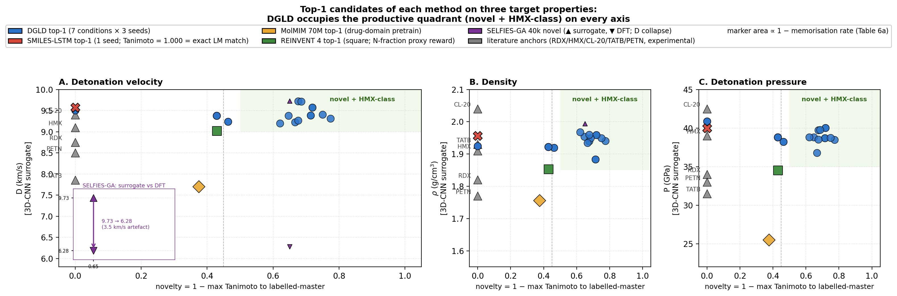
Applying the four-stage validation funnel (Methods, "Validation funnel") to a pool of 40,000 candidates per denoiser yields a Pareto front of 34 candidates after the SMARTS gate and Pareto reranker (top-\(k\) by composite score, with Pareto-optimal candidates ranked first; see Methods, "Validation funnel" for the explicit composite formula). Of these, 100 (top-100 by composite) advance to GFN2-xTB triage at the 1.5 eV HOMO–LUMO gap gate; 85 of 100 survive. From the 85 xTB-passing candidates, twelve are selected for full DFT audit by combining the highest composite scores with chemist review for chemotype diversity (the “chem-pass” set; selection criteria detailed in Methods, “Validation funnel”). First-principles DFT audit at B3LYP/6-31G(d) optimisation with \(\omega\)B97X-D3BJ/def2-TZVP single-points confirms all twelve chem-pass leads as real local minima (no imaginary frequencies; minimum real modes 9–52 cm–1). Densities and heats of formation are calibrated against six experimental anchors (RDX, TATB, HMX, PETN, FOX-7, NTO) by linear regression with leave-one-out RMS \(\pm 0.078\) g/cm3 and \(\pm 64.6\) kJ/mol. Calibrated detonation velocity is recomputed under Kamlet–Jacobs on the calibrated thermochemistry. Lead L1, 3,4,5-trinitro-1,2-isoxazole, reaches \(\rho_\text{cal} = 2.09\) g/cm3 and \(D_\text{K-J,cal} = 8.25\) km/s (Table 1; the (\(D\), \(P\)) distribution of the merged top-200 candidates appears in Fig. 2) — the highest density of the set, in the HMX-class regime by anchor-relative ranking, and absent from PubChem. The polynitroisoxazole family is established in the energetic-materials literature3233; the closest fully-substituted ring previously characterised is the isomeric 3,4,5-trinitro-1H-pyrazole34, so L1 is a chemotype-class rediscovery with a positionally novel substitution pattern.
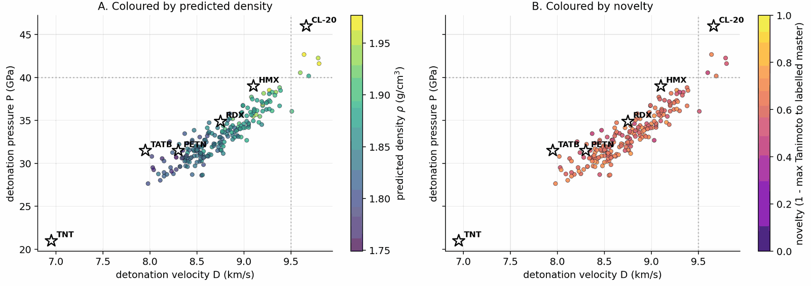
| ID | \(\rho_\text{cal}\) (g/cm3) | \(D_\text{K-J,cal}\) (km/s) | \(P_\text{K-J,cal}\) (GPa) | max-Tani | chemotype family |
|---|---|---|---|---|---|
| L1 (3,4,5-trinitro-1,2-isoxazole) | 2.09 | 8.25 | 32.9 | 0.27 | trinitroisoxazole |
| L2 | 1.95 | 7.78 | 28.1 | 0.34 | nitramine |
| L3 | 2.00 | 7.50 | 26.5 | 0.31 | polynitro carbocycle |
| L4 | 1.94 | 6.71 | 20.9 | 0.36 | tetrazoline nitramine |
| L5 | 1.94 | 7.99 | 29.6 | 0.42 | acyl oxime nitrate |
| L9 | 1.91 | 7.33 | 24.6 | 0.39 | small-ring nitramine |
| L11 | 1.90 | 7.88 | 28.5 | 0.41 | furazan nitro |
| L13 | 1.86 | 7.36 | 24.5 | 0.43 | nitrotriazole |
| L16 | 2.00 | 7.50 | 26.5 | 0.32 | polynitro carbocycle |
| L18 | 1.84 | 7.09 | 22.6 | 0.46 | nitramine |
| L19 | 1.91 | 7.24 | 24.0 | 0.40 | nitrotetrazole |
| L20 | 1.98 | 7.41 | 25.8 | 0.49 | nitramine (extension) |
A scaffold-diversity audit on a 500-candidate extension set, mined under a Tanimoto-NN cap of 0.55 against the L-set, yields ten further survivors (E1–E10) spanning eight Bemis–Murcko scaffolds across six chemotype families. The co-headline lead E1 (4-nitro-1,2,3,5-oxatriazole) reaches \(\rho_\text{cal} = 2.04\) g/cm3 (slightly below L1) but \(D_\text{K-J,cal} = 9.00\) km/s (0.75 km/s above L1), from a chemotype family disjoint from L1's. The 1,2,3,5-oxatriazole ring system has known thermal and Lewis-acid ring-opening pathways640; a dedicated bond-dissociation-energy and DSC/TGA stability screen is required before E1 reaches L1 confidence, and the six-anchor calibration set contains no oxatriazole-class member, so E1's calibrated \(D\) is an extrapolation outside the anchor chemical space.
The 6-anchor calibration is anchored on experimentally measured densities and heats of formation: \(\rho_\text{cal} = 1.392 \rho_\text{DFT} - 0.415\) and \(\text{HOF}_\text{cal} = \text{HOF}_\text{DFT} - 206.7\) kJ/mol. Figure 3 shows per-lead detonation velocity from the 3D-CNN surrogate, raw DFT/Kamlet–Jacobs and the 6-anchor-calibrated DFT/K-J value, alongside the per-lead residual versus nitrogen fraction. The residual versus nitrogen fraction shows a positive Pearson correlation (\(r = 0.43\), \(p = 4 \times 10^{-27}\) on 575 Tier-A experimental rows): K-J under-predicts \(D\) at high nitrogen fraction where the assumed product distribution breaks down. L1 sits in a regime similar to the anchor PETN (one of the six calibration compounds; \(f_N \approx 0.29\), oxygen balance \(\approx +8\,\%\)) where K-J is most reliable; the 1.31 km/s residual to the 3D-CNN surrogate is therefore plausibly surrogate over-prediction in the sparsely represented polynitroisoxazole region rather than K-J failure. Three SMARTS-rejected reference scaffolds optimise as real local minima under the same DFT protocol, confirming that the SMARTS and DFT layers are complementary rather than redundant: SMARTS rejection is motif-level (shock-sensitivity, friction-trigger risks beyond gas-phase DFT), not geometric.
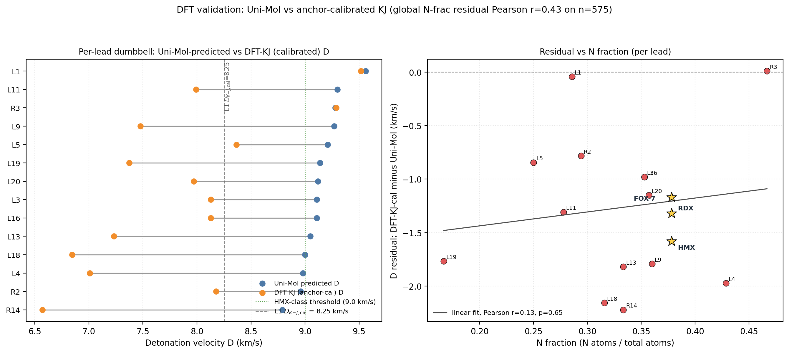
Three audits frame the merged top-100 against PubChem7, public USPTO retrosynthesis templates and a scaffold-distinct extension set. 96 of 97 top-100 candidates are absent from PubChem (three transient PUG REST API errors excluded from the denominator; the one rediscovery is a low-rank tetrazole derivative). 97 of 100 are absent from the 65,980-row labelled master; the three rediscoveries (dinitramide, 1,2-dinitrohydrazine, N,N′-dinitrocarbodiimide) are established high-density CHNO motifs that confirm the model rediscovers what is known. Zero of 100 candidates lie within Tanimoto 0.70 of any training row, and zero are exact matches in a 694,518-row augmented corpus — the candidates are more distant from the augmented corpus than from the labelled master alone, despite the augmented corpus being more than ten times larger. AiZynthFinder8 with public USPTO templates returns nine productive routes for L1 (top route four steps, state score 0.50) but zero routes for the other eleven leads within budget, reflecting a public-USPTO drug-domain template-database gap rather than unsynthesisability of the candidates — an energetics-domain template extension is the natural community follow-up.
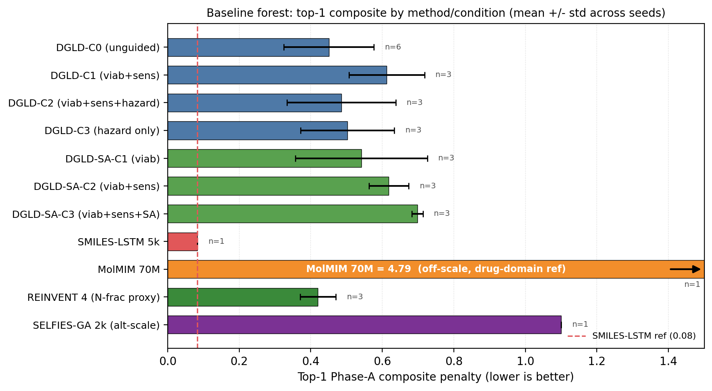
Across the four no-diffusion baselines, the failure modes are distinct and quantifiable (Fig. 4). SMILES-LSTM (two-layer, 6 M parameters, trained on the same 326k SMILES corpus) memorises 18.3% of its outputs as exact labelled-master matches (3 seeds, s.d. 0.5%). SELFIES-GA returns 75 of 100 top candidates as exact corpus rediscoveries; its best novel candidate at 40k pool collapses from \(D_\text{surrogate} = 9.73\) to \(D_\text{DFT} = 6.28\) km/s under DFT audit. MolMIM 70 M, drug-domain pretrained, generates novel molecules but at \(D = 7.70\) km/s, far below HMX. REINVENT 4 with an N-fraction reward generates genuinely novel high-N heterocycles with near-zero memorisation (\(< 0.1\%\)) and reaches \(D = 9.02\) km/s — the strongest no-diffusion baseline, but 0.37 km/s below DGLD Hz-C2 and not optimised against the joint \(D / \rho / P\) targets DGLD conditions on. Distribution-learning metrics27 confirm the design intent: SMILES-LSTM has Fréchet ChemNet Distance (FCD) 0.52 against a 5,000-row labelled master sample (distributionally indistinguishable because it reproduces labelled rows), while DGLD has FCD 24–26 across guidance conditions, with anti-correlation between FCD and Pareto-reranker composite within DGLD — the diffusion sampler performs a targeted search off the prior, not corpus mimicry.
Seven ablations isolate the contribution of each system component to the headline result (Fig. 5). Removing the tier gate causes the sampler to collapse to high-nitrogen degenerate open chains (post-filter keep-rate jumps from 4.6% to 53.9% as low-quality candidates flood the survivors), with validation loss rising by 0.089. Replacing the diffusion latent with a Gaussian \(\mathcal{N}(0, I)\) prior at matched compute drops top-1 \(D\) from 9.47 to 9.02 km/s; the diffusion prior's role is not chemical-plausibility filtering (a Gaussian decode through frozen LIMO already does that) but distribution concentration on the high-\(D\) tail. Multi-head guidance trades scaffold diversity for novelty: hazard-axis C2 reaches max-Tanimoto 0.27 (the most novel condition) at the cost of scaffold count five versus twelve at C0. Self-distillation at round 2 (cumulative 918 hard negatives versus 137 at round 1) is required to demote a worst-offender model-cheat (gem-tetranitro on aromatic carbon) by 0.10 absolute composite. Pool fusion across five lanes lifts post-filter yield nearly fivefold (4,639 versus 966 candidates) without lifting top-1, surfacing 24 Bemis–Murcko scaffolds versus seven in a single lane. The classifier-free-guidance scale \(w = 7\) is the empirical optimum (983 final candidates versus 528 at \(w = 5\) and 427 at \(w = 9\)).
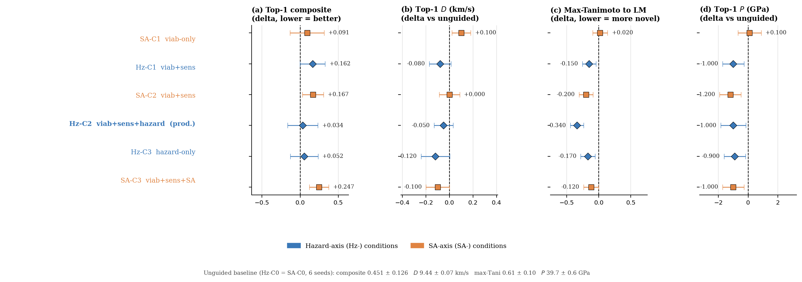
DGLD demonstrates that a label-quality gate at training time, multi-head score-model guidance at sample time and a four-stage chemistry-validation funnel are sufficient to produce novel CHNO leads in the HMX/CL-20 performance band on commodity hardware. Twelve leads are DFT-confirmed local minima at calibrated densities of 1.84–2.09 g/cm3; the headline compound L1 is structurally dissimilar from all 65,980 training molecules at nearest-neighbour Tanimoto 0.27 and absent from PubChem.
Three caveats temper the headline numbers, in decreasing order of severity. First, all densities are estimated from gas-phase DFT geometry using Bondi van-der-Waals volumes with a fixed packing factor of 0.69. This factor varies from approximately 0.65 for loosely packing aromatics to 0.72 for cubane-class compounds, and a 5% packing-factor error alone propagates through the K-J sensitivity \(\partial D / \partial \rho \approx 2.9\) km/s per g/cm3 to \(\pm 0.4\) km/s in \(D\), roughly twice the 6-anchor calibration uncertainty. The 6-anchor empirical calibration absorbs the average systematic packing-factor offset across the anchors, leaving a leave-one-out residual of \(\pm 0.078\) g/cm3; per-compound deviations from the average packing factor remain unquantified, and polymorph screening is absent — high-nitrogen heterocycles frequently exhibit multiple crystal forms with different densities and sensitivity profiles. Crystal structure prediction39 or experimental single-crystal X-ray diffraction is the critical missing step before any density-based performance claim can be considered quantitative. Second, absolute detonation velocities are reported under the closed-form Kamlet–Jacobs approximation. Absolute-grade numbers require a thermochemical-equilibrium Chapman–Jouguet code with a covolume equation of state (EXPLO5, Cheetah-2, or the open-source Cantera-based Shock and Detonation Toolbox); we report relative ranking against six anchors and quantify the regime-dependent K-J residual but do not run a full thermochemical-equilibrium recompute. Third, the 3D-CNN surrogate that scores the bulk of the candidate pool is well-calibrated on the labelled distribution but extrapolates onto the high-density tail with unquantified reliability; the SELFIES-GA collapse from \(D = 9.73\) to 6.28 km/s under DFT audit on a different baseline's outputs is the cleanest demonstration of how surrogate-only rankings can mislead.
The co-headline lead E1 (4-nitro-1,2,3,5-oxatriazole) inherits all three caveats and adds a fourth: the 6-anchor DFT calibration set contains no oxatriazole-class member, so E1's calibrated detonation velocity is an extrapolation outside the anchor chemical space. Two honest readings are possible: either E1 is genuinely stronger than L1, giving the paper two HMX-class leads from disjoint chemotype families, or the K-J residual is chemotype-dependent and E1 is upper-bounded until an oxatriazole-anchor recompute. A 7th-anchor extension attempt with DNTF failed to converge; an oxatriazole-class anchor with experimental crystal density and detonation data remains scoped as future work.
The tier-gating recipe is in principle domain-agnostic. Many generative-ML problems share the same structural feature: labels stratified by experimental confidence (pharmaceutical bioactivity assay versus literature versus QSAR surrogate; materials property prediction measured versus computed versus inferred). The same four-tier mechanism — trusted labels driving the conditional gradient, noisy labels training only the unconditional prior — should apply directly, with only the validation funnel changing per application. Whether the recipe transfers cleanly outside energetic materials remains to be demonstrated empirically. Code, checkpoints and the 918 mined hard negatives are released openly under permissive licences (Methods, "Code availability") to enable both reproduction within energetic materials and re-use of the tier-gating mechanism in other label-stratified domains.
References cited in the main text and in Methods are merged into a single numbered list below.
The labelled corpus comprises 65,980 CHNO molecules in canonical SMILES form, stratified into four tiers by label provenance. Tier A (\(\sim\)3,000 rows) holds experimental densities and heats of formation from the literature. Tier B (\(\sim\)9,000 rows) holds DFT-derived heat-of-formation values at B3LYP/6-31G* with experimentally anchored densities. Tier C (\(\sim\)25,000 rows) holds Kamlet–Jacobs-derived performance values, which are reliable for oxygen-deficient CHNO satisfying \(2a + b/2 \ge d \ge b/2\) but under-predict \(D\) for high-nitrogen low-hydrogen compounds where the assumed gas-product distribution is wrong. Tier D (\(\sim\)30,000 rows) holds 3D-CNN smoke-model surrogate values. Each row carries a graded tier weight \(\omega \in [0, 1]\) (default \(\omega_A = 1.0\), \(\omega_B = 0.7\), \(\omega_C = 0.3\), \(\omega_D = 0.1\)). The denoiser conditional gradient fires only on Tier-A and Tier-B rows; Tier-C and Tier-D rows train the unconditional prior via classifier-free guidance dropout. SMILES are canonicalised with RDKit20, converted to SELFIES12, and tokenised. A high-tail oversampling layer is applied at denoiser-training time on Tier-A/B rows; the per-denoiser tilt (HOF tail or \(\rho DP\) tail) is described under "Two complementary denoisers" below. Combined with the tier-gated conditional gradient, the asymmetric oversampling raises the mean predicted detonation velocity of the top leads by 0.4 km/s relative to a uniform-sampling control.
We start from the pretrained LIMO checkpoint9, fine-tune all parameters for \(\sim\)8,500 steps on the 326k energetic-biased SMILES corpus with the standard ELBO objective \(\mathcal{L}(x) = -\mathbb{E}_{q(z|x)}[\log p(x|z)] + \beta \cdot \text{KL}(q(z|x) \,\|\, \mathcal{N}(0, I))\) at \(\beta = 0.01\) (free-bits clipping disabled), and freeze the encoder thereafter. The encoder maps a (B, 72) SELFIES-token tensor through a 64-dim embedding and a four-layer MLP \(\big(\)Linear(72·64 \(\to\) 2000)–ReLU–Linear(2000 \(\to\) 1000)–BN–ReLU–Linear(1000 \(\to\) 1000)–BN–ReLU–Linear(1000 \(\to\) 2 · 1024)\(\big)\) to a 1024-dim Gaussian latent (the final 2 · 1024 head packs \(\mu\) and \(\log \sigma^2\)); the decoder mirrors this architecture and produces a (B, 72, 108) log-probability tensor in parallel (non-autoregressive). After fine-tuning, validation token-accuracy is 64.5%, and the latent posterior is concentrated at \(\Vert \mu \Vert \approx 8\), well below \(\sqrt{1024} \approx 32\). Each row of the corpus is passed through the frozen encoder once to produce a deterministic latent mean \(\mu \in \mathbb{R}^{1024}\); all training and sampling thereafter happens in latent space, and the decoder is invoked only at the end to read candidates back as SMILES. SELFIES syntax guarantees token-level validity, so molecule-level validity is 100% by construction; reconstruction accuracy on the energetic validation set is 31.4%, sufficient because the diffusion sampler explores latent space rather than reconstructing held-out molecules. The cached tensor stores, per row, the latent mean, the four conditioning targets \(\rho\), HOF, \(D\), \(P\), the per-row tier weight, the per-property availability mask, and per-property normalisation statistics (mean and standard deviation over the trusted Tier-A and Tier-B subset).
Single-denoiser training compromises between the high-HOF tail and the high-\(\rho DP\) tail of the joint property marginal, neither of which can be saturated simultaneously by one loss-weighting schedule. We therefore train two complementary denoisers. DGLD-H tilts toward the heat-of-formation tail (Tier-A/B oversampling factor \(5\times\) on HOF). DGLD-P tilts toward the \(\rho DP\) tail (Tier-A/B-only conditioning, \(+5\times\) high-tail oversampling on the top decile of the joint \(\rho/D/P\) marginal). Both denoisers are 44.6M-parameter FiLM13-modulated ResNets over \(z_t \in \mathbb{R}^{1024}\) with eight residual blocks of inner width 2048; only the training-data tilt differs. Training uses a 1000-step variance-preserving DDPM10 with the cosine schedule of Nichol & Dhariwal11, AdamW14 at peak learning rate \(10^{-4}\) on a cosine decay, batch size 128, twenty epochs, EMA decay 0.999, classifier-free-guidance dropout rate 0.10, and per-property dropout rate 0.30. The per-step training mask \(m \in \{0, 1\}^4\) gates which of the four conditioning properties (\(\rho\), HOF, \(D\), \(P\)) enter FiLM at each step via a five-stage stochastic pipeline. (i) Subset-size sampling draws \(k\) from a Categorical with probabilities \(\{0\!:\!.10, 1\!:\!.25, 2\!:\!.30, 3\!:\!.25, 4\!:\!.10\}\). (ii) Weighted pick samples \(k\) properties from the per-row eligibility \(e \in \{0, 1\}^4\) using tier-weight-scaled multinomial draws to form a tentative one-hot. (iii) Property dropout at rate 0.30 independently zeroes each entry of the tentative mask. (iv) CFG dropout at rate 0.10 zeroes the entire mask, sending the example through the unconditional branch. (v) The output mask gates only the FiLM property input, while the per-row weight \(\omega_\text{row} = \alpha + (1 - \alpha) \cdot \text{mean}(w_\text{tier} \odot m)\) modulates the per-sample loss (default \(\alpha = 1.0\), reducing to plain MSE; \(\alpha < 1.0\) up-weights more-trusted rows). At sample time, the standard guided estimate \(\hat\epsilon = \epsilon_\theta(z_t, t, \emptyset) + w(\epsilon_\theta(z_t, t, c) - \epsilon_\theta(z_t, t, \emptyset))\) is used with empirical sweet-spot \(w = 7\) selected from a three-point sweep \(w \in \{5, 7, 9\}\) at pool = 8k per setting.
The multi-task score model has a shared four-block FiLM-MLP trunk (1024-dim hidden) consuming \((z_t, \sigma_t)\) where \(\sigma_t = \sqrt{1 - \bar\alpha_t}\) is sinusoidally embedded, with six heads. Viability and Hazard are sigmoid heads trained with binary cross-entropy. Sensitivity, SA, and SC are smooth-L1 regressors. Performance is a 4-vector smooth-L1 regressor on \((\rho, D, P, \text{HOF})\). Crucially, training data are noised latents at uniform diffusion timestep, not clean \(\mu\), so the gradient is queried at every \(\sigma_t\) along the sampling trajectory. The total loss is the availability-mask-gated sum \(\mathcal{L}_\text{score} = \sum_k a_k w_k \mathcal{L}_k\) with per-head static weights chosen so each \(\mathcal{L}_k\) sits at \(\mathcal{O}(1)\) at convergence. Training uses AdamW at peak learning rate \(2 \times 10^{-4}\) on a cosine decay, batch 1024, \(\sim\)40k steps, EMA decay 0.999. Round-0 viability labels combine SMARTS pass/fail with a Random Forest classifier on Morgan FP plus RDKit descriptors trained on (energetic corpus, ZINC28). Self-distillation refines the viability head over three rounds (round 0: 0 hard negatives; round 1: 137; round 2 / production: 918), executing a five-step protocol per round. (i) Sample: draw 5,000 candidates with the current score-model checkpoint at the production sampling configuration. (ii) Filter: pass candidates through Stages 1+2 of the validation funnel and retain only those scored above the round's viability threshold but flagged by chemist review as non-viable (false positives that the current viability head fails to demote). (iii) Encode: pass each false-positive through the frozen LIMO encoder to produce its latent. (iv) Append: add these latents to the score-model training set with viability label set to zero (other heads marked as availability = 0 since their labels are unmodified by the sampling correction). (v) Retrain: train the next round's score model from scratch on the augmented dataset. Convergence is determined by a chemist-defined held-out probe consisting of seven anchors (RDX, HMX, TNT, FOX-7, PETN, TATB, NTO) that must all reach probability \(\ge 0.86\) and five chemist-defined “cheats” (canonical model-cheat motifs such as gem-tetranitromethyl on aromatic carbons; deliberately constructed to exploit known surrogate weaknesses) that must all stay \(\le 0.84\). Three rounds satisfy this jointly; no fourth round was needed. Sensitivity labels are derived from a Politzer–Murray31 bond-dissociation-energy chemotype-class fit on the Huang & Massa30 drop-weight \(h_{50}\) data: BDE values are computed by relaxed scans along the weakest C–NO\(_2\) or N–NO\(_2\) bond, regressed against tabulated \(h_{50}\) within chemotype classes, and the regressor is then applied corpus-wide to label every row. Hazard labels combine the chemist-curated SMARTS catalogue (a domain-expert list of motifs flagged as shock-, friction-, or thermally sensitive beyond what gas-phase electronic structure can capture) with the Bruns–Watson29 demerit list (a published reactivity rule-set originally compiled for medicinal chemistry filtering). The synthetic-accessibility (SA) and synthetic-complexity (SC) heads use SAScore and SCScore labels respectively (computed corpus-wide), trained as auxiliary multi-task signals; their gradients during sampling are zeroed in production because a drug-domain SA gradient worsens the energetic-materials composite by 13% in head-to-head ablation. Per-head loss weights are hand-set so each \(\mathcal{L}_k\) sits at order one at convergence: viability and hazard at 1.0, sensitivity and SA at 0.5, SC at 0.3, performance at 0.7.
At sample time, three of the six trained heads (Viability, Sensitivity, Hazard) supply gradient steering signals at every DDIM step on top of classifier-free guidance. A latent \(z_T \sim \mathcal{N}(0, I_{1024})\) is denoised over 40 DDIM steps with the steering bus \(\hat\epsilon = \epsilon_\theta^\text{cfg}(z_t, t, c) - \sigma_t \sum_h s_h \nabla_{z_t} \mathcal{L}_h(z_t, \sigma_t)\), where the per-head losses are \(-\log P_\text{viab}\) (ascend), \(\text{sens}_z\) (descend), and \(-\log(1 - P_\text{hazard})\) (descend hazard). Production scales are \(s_\text{viab} = 1.0\), \(s_\text{sens} = 0.3\), \(s_\text{hazard} = 1.0\); \(s_\text{SA} = 0\) because a drug-domain SA gradient worsens the energetic-materials composite by 13%. The image-domain classifier-guidance recipe of Dhariwal & Nichol5 assumes 1000 sampling steps; in our 40-step latent regime the \(\sigma_t\)-anneal zeroes the bus near the top of the trajectory and the per-row gradient clamp saturates near the bottom. We disable the anneal (\(\alpha \equiv 1\)) and loosen the clamp (\(C_g = 50\) versus the image-domain default 5.0); a four-test grid-norm diagnostic across both configurations confirmed that the production setting recovers per-step gradient magnitudes consistent with the score-model's training distribution, while the unmodified image-domain recipe zeroes the bus during the first \(\sim\)10 of 40 DDIM steps (where the anneal multiplier sits near zero) and saturates the clamp during the last \(\sim\)10 (where natural per-row gradient magnitudes are 8–30, well above 5). The final \(z_0\) decodes through the frozen LIMO decoder to a SMILES pool. Pool fusion runs two production lanes in parallel (one per denoiser, both at viability+sensitivity+hazard guidance, both at \(w = 7\), pool \(\ge\) 40k each); the pools are unioned, canonical-SMILES deduplicated, and fed to the validation funnel. An optional five-lane configuration (two production lanes plus three diversity-axis lanes varying conditioning targets and guidance configurations) lifts post-filter yield approximately fivefold and surfaces 24 distinct Bemis–Murcko scaffolds versus seven in a single lane, at proportional compute cost.
The decoded SMILES pool flows through four progressively tighter stages. Stage 1 (SMARTS gate): a chemist-curated SMARTS41 catalogue removes radicals, sulphur, halogens, mixed valence states, and other red flags. SAScore25 \(\le 5.0\) and SCScore26 \(\le 3.5\) caps and a Tanimoto-novelty window \([0.20, 0.55]\) are applied. Stage 2 (Pareto reranker): a composite \(S(x) = 0.45 S_\text{perf}^\text{band} + 0.20 S_\text{viab} + 0.15 S_\text{novel} + 0.20(1 - S_\text{sens}) - 0.10 S_\text{alerts}\) is computed; a Pareto front over \((-\text{perf}, -\text{viab}, \text{sens}, \text{alerts})\) is the outer stratifier with the composite as within-stratum tiebreak; default top-\(K = 100\). Stage 3 (xTB triage): GFN2-xTB15 geometry optimisation with RDKit ETKDGv3 conformer plus MMFF94 minimisation, HOMO–LUMO gap \(\ge 1.5\) eV. Stage 4 (DFT audit): B3LYP161747/6-31G(d) optimisation followed by \(\omega\)B97X-D3BJ184445/def2-TZVP46 single-points on GPU4PySCF4243. Vibrational frequency analysis is performed at the optimised geometry; structures with any imaginary frequency are rejected as transition-state-like rather than true minima. Density is computed from Bondi19 van-der-Waals volume integration over the optimised electron density with a packing factor of 0.69 (within the 0.65–0.72 range typical for organic CHNO crystals; the 6-anchor calibration absorbs the systematic average packing-factor offset). Heat of formation is computed from the optimised electronic energy via standard atomisation-energy decomposition with literature reference enthalpies for the constituent atoms. At the production setting (pool = 40k per denoiser), illustrative survivors are pool 40k \(\to\) \(\sim\)1,800 chem-pass after Stages 1+2 (4.6% keep-rate) \(\to\) top-100 by composite re-rank \(\to\) 85 of 100 surviving xTB \(\to\) 12 leads selected for full DFT audit (highest composite scores combined with chemist review for chemotype diversity) \(\to\) all 12 confirmed as real local minima.
Six experimental anchors (RDX \(\rho_\text{exp} = 1.82\) g/cm3, TATB 1.94, HMX 1.91, PETN 1.77, FOX-7 1.89, NTO 1.93; HOF values from the LLNL Explosives Handbook35 and standard tabulations) are optimised under the same DFT protocol as the leads. A linear regression yields \(\rho_\text{cal} = 1.392 \rho_\text{DFT} - 0.415\) and \(\text{HOF}_\text{cal} = \text{HOF}_\text{DFT} - 206.7\) kJ/mol with leave-one-out RMS errors \(\pm 0.078\) g/cm3 on density and \(\pm 64.6\) kJ/mol on heat of formation. Calibrated densities and HOFs are fed into the closed-form Kamlet–Jacobs1 formula in its unified product-distribution form for relative ranking against the anchors. Per-lead calibration-propagated uncertainties (\(\delta D\), \(\delta P\)) are obtained by propagating the LOO calibration errors through the K-J analytic sensitivity slopes in quadrature; typical values are \(\delta D \approx 0.23\) km/s and \(\delta P \approx 2.2\) GPa. A regime-aware regression on 575 Tier-A experimental rows yields a positive Pearson correlation between the K-J residual and nitrogen fraction (\(r = 0.43\), \(p = 4 \times 10^{-27}\)), reproducing the literature observation that K-J under-predicts \(D\) at high \(f_N\). The six anchors were chosen to span the densely-populated experimentally-anchored region of the energetic-materials composition space at production-grade purity: RDX and HMX (canonical military explosives, ring nitramines), TATB (insensitive aromatic, low \(D\)), PETN (oxygen-rich nitrate ester), FOX-7 (push–pull nitroamine), and NTO (nitrotriazolone). A 7th-anchor extension with DNTF (a dinitrofurazanofurazan candidate intended to extend the calibration into the high-density furazan family) failed to optimise to a stable minimum under the same DFT protocol and was retained as a known limitation rather than included in the calibration. Absolute-grade detonation velocities require a thermochemical-equilibrium Chapman–Jouguet code363738, which we do not run; we report relative ranking against the six anchors and quantify the regime residual on 575 Tier-A experimental rows.
End-to-end DGLD reproduction fits within a small commodity-hardware budget: LIMO fine-tuning \(\sim\)1 GPU-hour on a single A100; each denoiser training run \(\sim\)6 GPU-hours; score-model training \(\sim\)4 GPU-hours; sampling at production pool=40k per lane \(\sim\)2 GPU-hours per lane; xTB triage on 100 candidates \(\sim\)4 CPU-hours; DFT audit at B3LYP/6-31G(d) optimisation plus \(\omega\)B97X-D3BJ/def2-TZVP single-point \(\sim\)2 GPU-hours per lead on GPU4PySCF. Total compute for the headline result is \(\sim\)45 GPU-hours plus \(\sim\)4 CPU-hours, all on rented datacenter A100 instances at standard commercial pay-per-use rates (Modal and vast.ai).
The 65,980-row labelled CHNO master table, the 326k SMILES training corpus, and the 918 self-distillation hard negatives are released on Zenodo at 10.5281/zenodo.19821953 under CC-BY-4.0. The DFT geometries, calibrated thermochemistry, and the twelve confirmed leads are released alongside the model checkpoints in the same Zenodo deposit. PubChem7 queries used the public PUG REST endpoint.
All code, including LIMO fine-tuning, denoiser and score-model training, sampling, the validation funnel and the figure-generation pipeline, is released at github.com/ApartsinProjects/DGLD4Energetic under Apache-2.0. Trained model checkpoints (LIMO encoder, two denoisers, multi-task score model at rounds 0/1/2 of self-distillation) are released on Zenodo under CC-BY-4.0 in the same deposit as the data. Reproduction of Figure 1 takes approximately ten minutes on commodity hardware following the README quick-start; full re-derivation of the twelve DFT-confirmed leads takes approximately 45 GPU-hours.
We thank the open-source maintainers of RDKit, GFN2-xTB, PySCF and GPU4PySCF, whose tools form the validation backbone of this paper. Cloud GPU compute was procured at standard commercial rates from Modal and vast.ai; we acknowledge their pay-per-use platforms for making first-principles audit accessible to small research groups. We thank the LIMO authors for releasing their pretrained checkpoint, which we fine-tune in this work.
This work received no specific external funding.
Y.A. and A.A. contributed equally to all aspects of this work, including conception, methodology design, model implementation, experiments, validation, and manuscript preparation.
The authors declare no competing interests.
Supplementary Information is available for this paper at NMIPaperSI.html (HTML) and NMIPaperSI.docx (Word). Correspondence and requests for materials should be addressed to A.A.
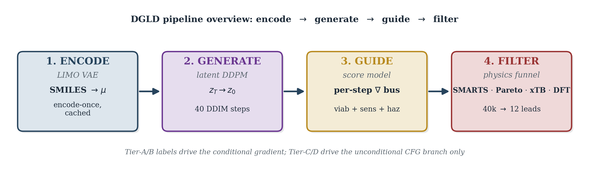
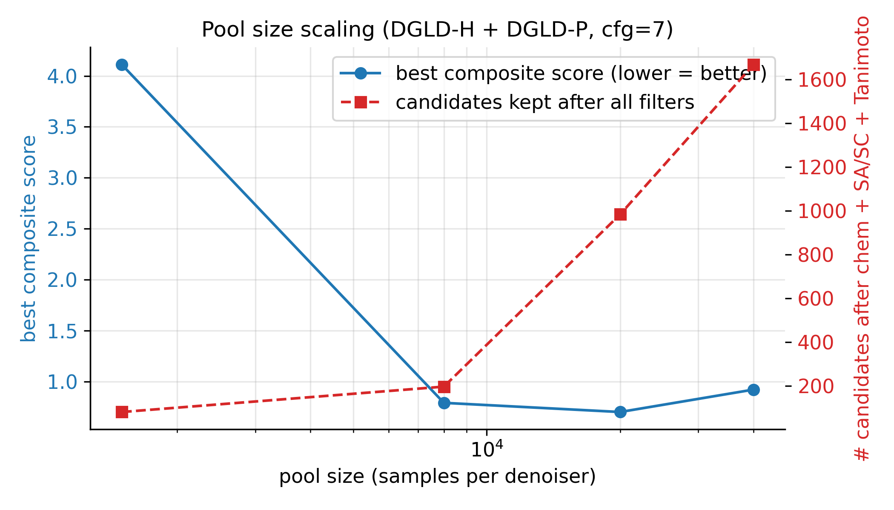
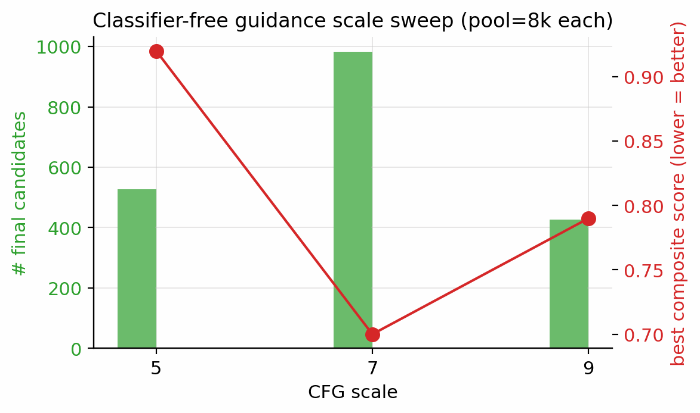
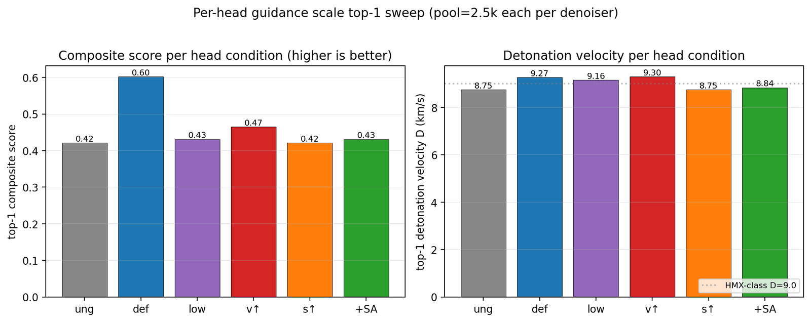
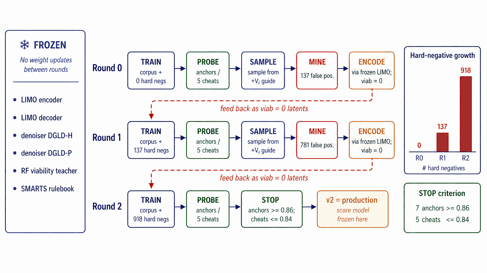
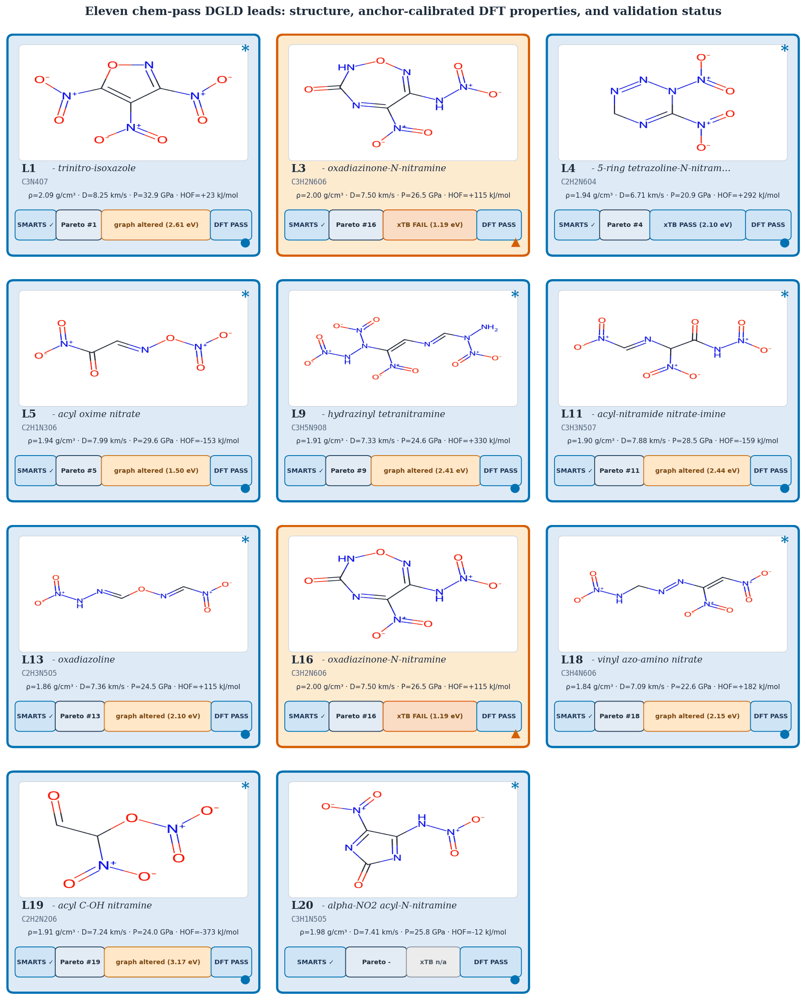
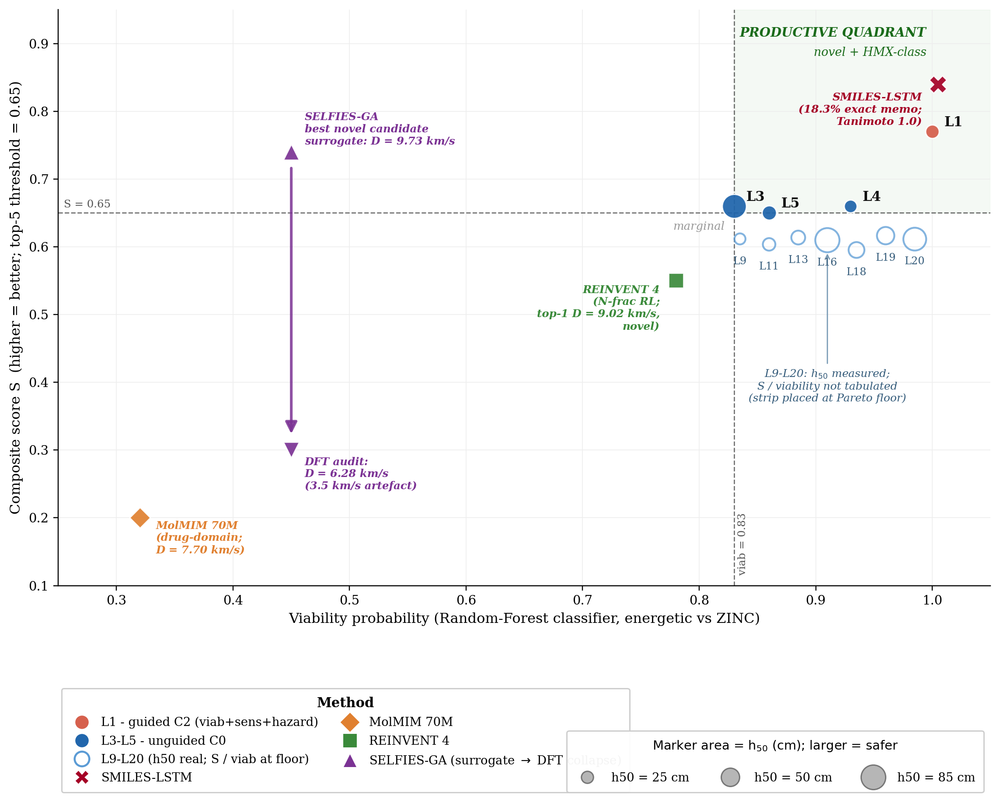
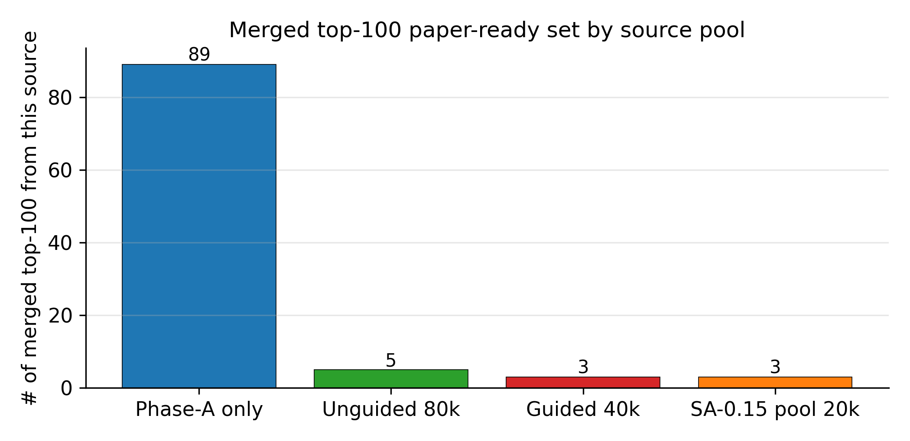
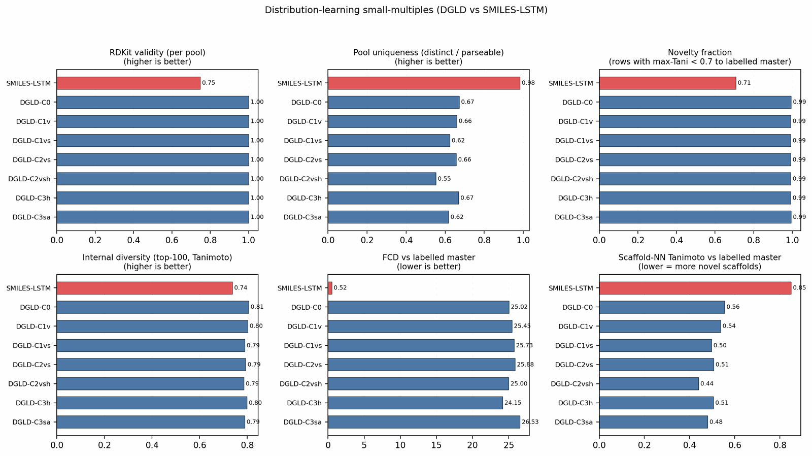
| Anchor | Chemotype family | \(\rho_\text{exp}\) (g/cm3) |
\(\rho_\text{DFT}\) (g/cm3) |
\(\rho_\text{cal}\) (g/cm3) |
\(\Delta H_f^\text{exp}\) (kJ/mol) |
\(\Delta H_f^\text{DFT}\) (kJ/mol) |
\(\Delta H_f^\text{cal}\) (kJ/mol) |
|---|---|---|---|---|---|---|---|
| RDX | ring nitramine | 1.82 | 1.632 | 1.857 | +70 | +240.4 | +33.8 |
| HMX | ring nitramine | 1.91 | 1.689 | 1.936 | +75 | +377.9 | +171.2 |
| TATB | aromatic amino-nitro (insensitive) | 1.94 | 1.663 | 1.900 | −141 | +82.9 | −123.7 |
| PETN | nitrate ester | 1.77 | 1.626 | 1.849 | −538 | −307.2 | −513.8 |
| FOX-7 | push–pull nitroamine | 1.89 | 1.613 | 1.830 | −134 | +41.6 | −165.0 |
| NTO | nitrotriazolone | 1.93 | 1.654 | 1.888 | −129 | +7.2 | −199.5 |